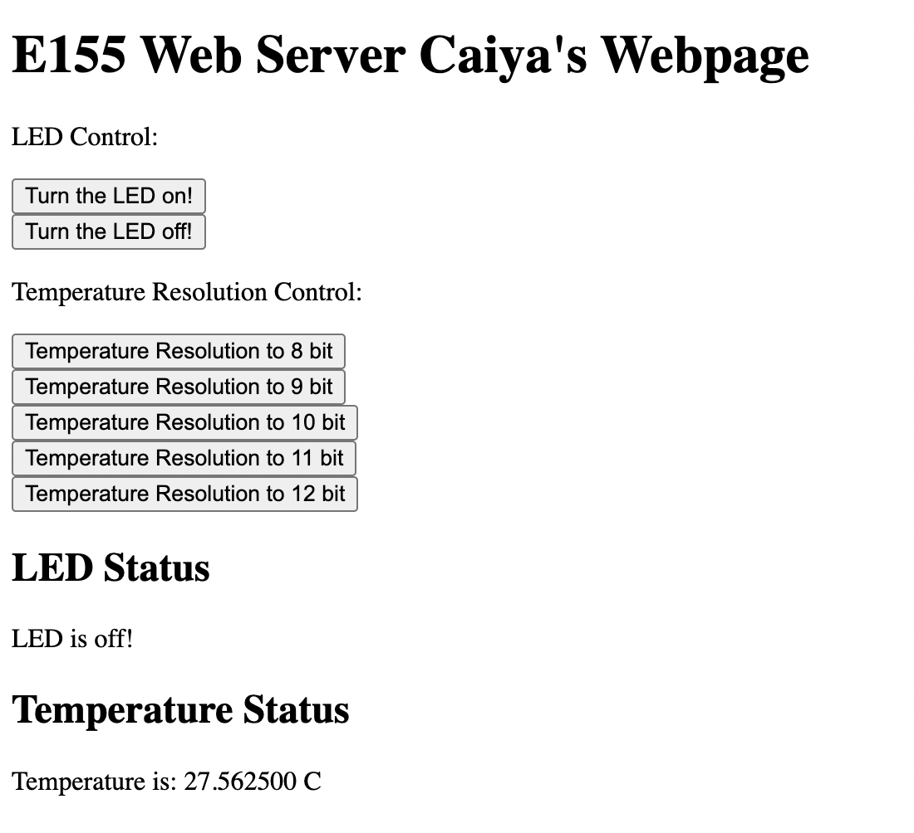
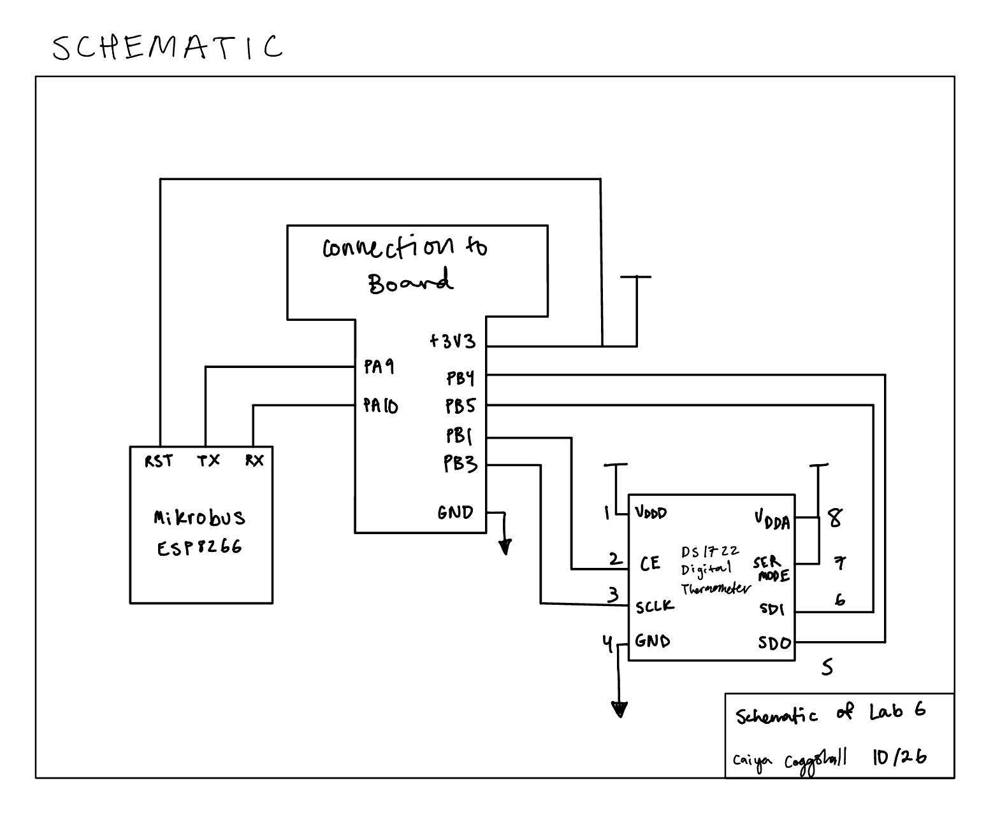
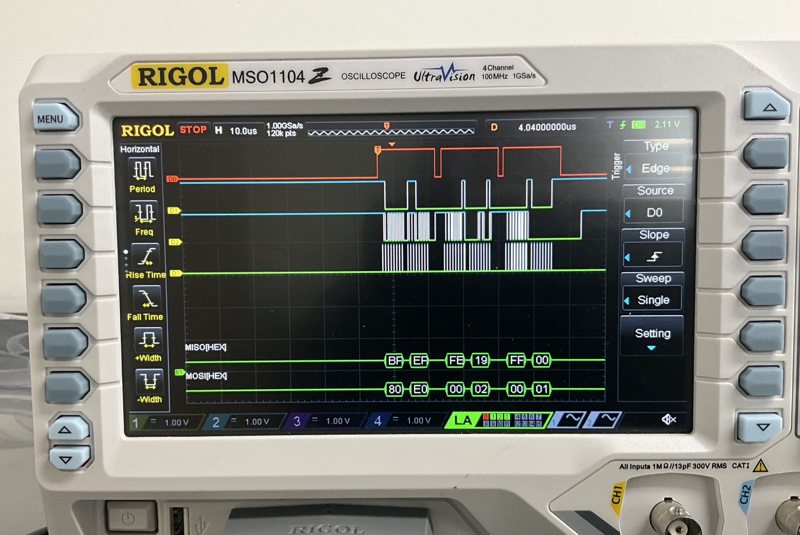

Lab 6 : Internet of Things and Serial Peripheral Interface
Introduction
In this lab we were asked to design and implement SPI functionality of the MCU to then interface with a digital temperature sensor module. Additionally we wrote a simple HTML page to control and display data from the peripherals connected to the MCU.
This is what the webpage looked like:

It was accessible after connecting to the WiFi access point specific to my ESP8266 board and then going to “http://192.168.4.1/”. It could often work rather slowly and take a few presses to set the resolution but it worked!
Schematic

Logic Analyzer

As seen in the trace, the MOSI MISO lines get the right hex numbers they were expecting. This was the trace seen after requesting 8-bit resolution. So the address 0x80 was sent to configure followed by the 0xE0 address for 8 bit resolution. Then it’s followed by dummy bits and the values at addresses 0x02 and 0x01 for the MSB and LSB bits respectively.
This was quite hard to set up on the oscilloscope and I watched the tutorial video 3 times over before I got it. A frustrating feature was that the MISO/MOSI values would change with horizhontal scaling or just between traces. A couple hypotheses is that if the LED is on then those addresses are interferring because the LED turns off automatically when setting a resolution. Another is that scaling affects resolution and accuracy of the trace which would reasonably translate to what it’s able to capture.
Code
All the code for the project can be found in the following Github repository.
The code should contain relevant datasheets and comments relating to the code.
Conclusion
Time Spent: 34 - 38 hours
I ended up facing quite a few bugs in the process of this lab which mean a lot of commenting out. At first my SPI didn’t work and then my configuretemp() function didn’t work and then all of my resolution didn’t work because I wasn’t converting the request into a readable form for my setresolution() function.
There was a very frustrating bug that said “10 bytes of fewer received on MCU” that seemed to haunt me.
I also had a very odd bug where my updateTemp function would return the right resolution number and then on the same request return “-1” right after that. I had to creatively fix that bug but was not able to determine the root cause of it.
AI Prototype
I used Chat GPT 5 Pro to come up with the code for the following prompt:
I’m making a web portal to interface with a temperature sensor. Create a HTML page that looks good and is intuitive to show the temperature, control an LED, and change the precision of the readout.
Write me a C function to carry out a SPI transaction to retrieve a temperature reading from a DS1722 sensor. Make use of CMSIS libraries for the STM32L432KC.It gave me:
<!DOCTYPE html>
<html lang="en">
<head>
<meta charset="utf-8" />
<meta name="viewport" content="width=device-width, initial-scale=1" />
<title>Temperature Sensor Portal</title>
<style>
/*
Temperature Sensor Web Portal — single file, no dependencies.
🔌 Hooking up to your backend/device
------------------------------------
Expected endpoints (override in the API config below):
GET /api/temperature -> { "value": number, "unit": "C" | "F" }
GET /api/led -> { "on": boolean }
POST /api/led -> { "on": boolean }
POST /api/precision -> { "decimals": 0..3 } (optional if device supports it)
Notes:
• The UI auto-enters Demo Mode if the above endpoints are not reachable, so you can preview the page immediately.
• To force demo mode, add ?demo=1 to the URL.
• To point at another host (e.g., a microcontroller), set API.base below, e.g. "http://192.168.1.42".
*/
:root {
--bg: hsl(220 16% 9%);
--card: hsl(0 0% 100% / 0.06);
--text: hsl(0 0% 96%);
--muted: hsl(220 10% 65%);
--border: hsl(0 0% 100% / 0.14);
--accent: hsl(260 100% 73%);
--good: hsl(142 72% 45%);
--warn: hsl(38 92% 50%);
--bad: hsl(0 84% 60%);
--shadow: 0 12px 30px rgba(0, 0, 0, 0.35);
}
@media (prefers-color-scheme: light) {
:root {
--bg: hsl(0 0% 98%);
--card: #ffffff;
--text: #0b1220;
--muted: #5c667a;
--border: #e5e7eb;
--shadow: 0 6px 18px rgba(0,0,0,0.08);
}
}
* { box-sizing: border-box; }
html, body { height: 100%; }
body {
margin: 0;
font-family: system-ui, -apple-system, Segoe UI, Roboto, Ubuntu, Cantarell, "Helvetica Neue", Arial, "Apple Color Emoji", "Segoe UI Emoji";
color: var(--text);
background: radial-gradient(1200px 700px at 20% -20%, rgba(124,108,255,0.22), transparent 60%),
radial-gradient(900px 600px at 120% 0%, rgba(0, 199, 255, 0.18), transparent 60%),
var(--bg);
line-height: 1.35;
}
.container { max-width: 1040px; margin: 0 auto; padding: 28px 20px 40px; }
header.app-header {
display: flex; align-items: center; justify-content: space-between; gap: 12px;
margin-bottom: 16px;
}
.title {
font-size: clamp(1.25rem, 1rem + 2vw, 2rem);
font-weight: 700;
letter-spacing: -0.01em;
}
.status-pill { display: inline-flex; align-items: center; gap: 8px; padding: 6px 10px; border: 1px solid var(--border); border-radius: 999px; background: var(--card); }
.status-dot { width: 8px; height: 8px; border-radius: 999px; background: var(--muted); box-shadow: 0 0 0 2px rgba(0,0,0,0.1) inset; }
.status-label { font-size: 0.9rem; color: var(--muted); }
.grid { display: grid; grid-template-columns: 1.6fr 1fr; gap: 16px; }
@media (max-width: 880px) { .grid { grid-template-columns: 1fr; } }
.card {
background: var(--card);
border: 1px solid var(--border);
border-radius: 18px;
box-shadow: var(--shadow);
padding: 18px;
backdrop-filter: saturate(140%) blur(6px);
}
/* Temperature Card */
.temp-card { display: grid; grid-template-rows: auto auto auto auto; gap: 14px; }
.temp-header { display: flex; align-items: center; justify-content: space-between; }
.temp-reading {
display: flex; align-items: baseline; gap: 12px; user-select: none;
font-variant-numeric: tabular-nums lining-nums;
}
.temp-value { font-size: clamp(3rem, 6vw, 5.5rem); font-weight: 800; letter-spacing: -0.02em; }
.temp-unit { font-size: clamp(1.1rem, 1.2vw, 1.35rem); color: var(--muted); font-weight: 600; }
.temp-meta { display: flex; align-items: center; gap: 12px; color: var(--muted); font-size: 0.95rem; }
.gauge { position: relative; width: 100%; height: 10px; background: linear-gradient(90deg, rgba(255,255,255,0.1), rgba(255,255,255,0.04)); border: 1px solid var(--border); border-radius: 999px; overflow: hidden; }
.gauge .fill { height: 100%; width: 0%; transition: width 220ms ease, background 200ms ease; background: linear-gradient(90deg, #00d2ff, #7c6cff); }
.gauge-labels { display: flex; justify-content: space-between; color: var(--muted); font-size: 0.85rem; margin-top: 4px; }
.controls { display: grid; gap: 12px; grid-template-columns: 1fr; }
.row { display: flex; align-items: center; justify-content: space-between; gap: 14px; }
.precision { display: grid; gap: 8px; }
.precision .label { color: var(--muted); font-size: 0.95rem; }
.precision .ctl { display: flex; align-items: center; gap: 12px; }
.precision input[type="range"] { width: 220px; accent-color: var(--accent); }
.precision output { font-weight: 700; }
.precision small { color: var(--muted); }
/* LED Card */
.led-card { display: grid; gap: 12px; align-content: start; }
.led-row { display: flex; align-items: center; justify-content: space-between; gap: 14px; }
.led-title { display: inline-flex; align-items: center; gap: 10px; font-weight: 700; }
.led-dot { width: 10px; height: 10px; border-radius: 999px; background: #737373; box-shadow: 0 0 0 2px rgba(0,0,0,0.12) inset; }
/* Toggle switch */
.switch { position: relative; display: inline-block; width: 56px; height: 32px; }
.switch input { opacity: 0; width: 0; height: 0; }
.slider { position: absolute; cursor: pointer; top: 0; left: 0; right: 0; bottom: 0; background-color: #6b7280; transition: .2s; border-radius: 999px; border: 1px solid var(--border); }
.slider:before { position: absolute; content: ""; height: 26px; width: 26px; left: 3px; top: 50%; transform: translateY(-50%); background-color: white; transition: .2s; border-radius: 50%; box-shadow: 0 1px 3px rgba(0,0,0,0.3); }
input:checked + .slider { background-color: #22c55e; }
input:checked + .slider:before { transform: translate(24px, -50%); }
.muted { color: var(--muted); }
footer.app-footer { margin-top: 18px; display: flex; align-items: center; justify-content: space-between; gap: 12px; color: var(--muted); font-size: 0.95rem; }
.demo-pill { padding: 6px 10px; border: 1px dashed var(--border); border-radius: 999px; }
.link { color: var(--accent); text-decoration: none; }
.link:hover { text-decoration: underline; }
.btn {
--btn-bg: transparent;
display: inline-flex; align-items: center; gap: 8px; padding: 8px 12px; border: 1px solid var(--border); border-radius: 10px; background: var(--btn-bg); color: var(--text); cursor: pointer;
transition: background 160ms ease, transform 60ms ease;
}
.btn:hover { background: hsl(0 0% 100% / 0.06); }
.btn:active { transform: translateY(1px); }
/* Accessibility */
.visually-hidden { position: absolute; width: 1px; height: 1px; padding: 0; margin: -1px; overflow: hidden; clip: rect(0,0,0,0); border: 0; }
</style>
</head>
<body>
<div class="container">
<header class="app-header" aria-live="polite">
<div class="title">🌡️ Temperature Sensor Portal</div>
<div class="status-pill" id="connPill" title="Connection status">
<span class="status-dot" id="connDot"></span>
<span class="status-label" id="connLabel">Connecting…</span>
</div>
</header>
<section class="grid">
<!-- Temperature card -->
<article class="card temp-card" aria-labelledby="tempLabel">
<div class="temp-header">
<div id="tempLabel" class="muted">Current temperature</div>
<button class="btn" id="refreshBtn" type="button" title="Refresh now">
↻ Refresh
</button>
</div>
<div class="temp-reading" aria-live="polite">
<div class="temp-value" id="tempValue">--.—</div>
<div class="temp-unit" id="tempUnit">°C</div>
</div>
<div class="gauge" aria-hidden="true">
<div class="fill" id="gaugeFill"></div>
</div>
<div class="gauge-labels"><span id="gaugeMin">-10°</span><span id="gaugeMax">50°</span></div>
<div class="temp-meta">
<span id="updatedAt">Waiting for data…</span>
<span>•</span>
<span id="sampleRate">1s</span>
</div>
<div class="controls">
<div class="precision">
<div class="label">Precision (decimals shown)</div>
<div class="ctl">
<input id="precisionRange" type="range" min="0" max="3" step="1" value="1" aria-label="Precision in decimal places">
<output id="precisionValue">1</output>
<label title="Attempt to set sensor resolution on device (optional)">
<input id="persistPrecision" type="checkbox"> <span class="muted">also apply to device (if supported)</span>
</label>
</div>
<small>Tip: Precision affects on-screen formatting. If your device supports it, ticking the box will POST to <code>/api/precision</code>.</small>
</div>
</div>
</article>
<!-- LED card -->
<aside class="card led-card" aria-labelledby="ledLabel">
<div class="led-row">
<div class="led-title" id="ledLabel"><span class="led-dot" id="ledDot"></span> LED Control</div>
<label class="switch">
<input id="ledToggle" type="checkbox" aria-label="Toggle LED on device">
<span class="slider"></span>
</label>
</div>
<div class="muted" id="ledStatus">Status: —</div>
</aside>
</section>
<footer class="app-footer">
<div class="muted">Device: <span id="deviceName">Default</span></div>
<div class="demo-pill" id="demoPill" hidden>Demo Mode (no device connected)</div>
</footer>
</div>
<script>
// -----------------------
// Config
// -----------------------
const API = {
base: '', // e.g., 'http://192.168.1.42' if the device is on the LAN
routes: {
temperature: '/api/temperature', // GET -> { value: number, unit: 'C'|'F' }
ledGet: '/api/led', // GET -> { on: boolean }
ledSet: '/api/led', // POST -> { on: boolean }
precision: '/api/precision' // POST -> { decimals: 0..3 } (optional)
},
pollMs: 1000,
// Gauge display range (tune for your sensor/env)
gauge: { min: -10, max: 50 }
};
// -----------------------
// Helpers
// -----------------------
const $ = sel => document.querySelector(sel);
const sleep = ms => new Promise(r => setTimeout(r, ms));
const clamp = (n, a, b) => Math.min(b, Math.max(a, n));
function url(path) { return API.base + path; }
async function getJSON(path, opts = {}) {
const res = await fetch(url(path), { ...opts, headers: { 'Accept': 'application/json', ...(opts.headers||{}) }, cache: 'no-cache' });
if (!res.ok) throw new Error('HTTP ' + res.status);
return res.json();
}
async function postJSON(path, body) {
const res = await fetch(url(path), {
method: 'POST',
headers: { 'Content-Type': 'application/json', 'Accept': 'application/json' },
body: JSON.stringify(body)
});
if (!res.ok) throw new Error('HTTP ' + res.status);
return res.json().catch(() => ({}));
}
function formatTemp(value, decimals, unit) {
const nf = new Intl.NumberFormat(undefined, { minimumFractionDigits: decimals, maximumFractionDigits: decimals });
const symbol = unit === 'F' ? '°F' : '°C';
return { text: nf.format(value), unit: symbol };
}
function setConnStatus(status) {
const dot = $('#connDot');
const label = $('#connLabel');
if (status === 'online') { dot.style.background = 'var(--good)'; label.textContent = 'Online'; }
else if (status === 'connecting') { dot.style.background = 'var(--warn)'; label.textContent = 'Connecting…'; }
else { dot.style.background = 'var(--bad)'; label.textContent = 'Offline'; }
}
function updateGauge(value) {
const { min, max } = API.gauge;
const pct = clamp(((value - min) / (max - min)) * 100, 0, 100);
const fill = $('#gaugeFill');
fill.style.width = pct.toFixed(1) + '%';
// Color blend cool->warm
const cool = '#00d2ff', warm = '#ff6b6b';
fill.style.background = `linear-gradient(90deg, ${cool}, ${warm})`;
$('#gaugeMin').textContent = `${min}°`;
$('#gaugeMax').textContent = `${max}°`;
}
function setLEDUI(on) {
const dot = $('#ledDot');
dot.style.background = on ? 'var(--good)' : '#737373';
$('#ledStatus').textContent = 'Status: ' + (on ? 'On' : 'Off');
$('#ledToggle').checked = !!on;
}
function setDemoModeUI(enabled) {
$('#demoPill').hidden = !enabled;
$('#deviceName').textContent = enabled ? 'Demo' : 'Default';
}
// -----------------------
// State
// -----------------------
let decimals = Number(localStorage.getItem('precision.decimals') ?? 1);
let unit = 'C';
let demoMode = false;
let polling = null;
// -----------------------
// Init
// -----------------------
async function init() {
// Precision UI
$('#precisionRange').value = String(decimals);
$('#precisionValue').value = String(decimals);
$('#tempUnit').textContent = unit === 'F' ? '°F' : '°C';
setConnStatus('connecting');
// Demo toggle via query
demoMode = new URLSearchParams(location.search).has('demo');
// Try a quick capability probe unless demo forced
if (!demoMode) {
try {
const probe = await Promise.race([
getJSON(API.routes.temperature),
sleep(1200).then(() => { throw new Error('timeout'); })
]);
if (probe && typeof probe.value === 'number') {
unit = (probe.unit || 'C').toUpperCase() === 'F' ? 'F' : 'C';
$('#tempUnit').textContent = unit === 'F' ? '°F' : '°C';
setConnStatus('online');
} else {
demoMode = true;
}
} catch (e) {
demoMode = true;
}
}
setDemoModeUI(demoMode);
if (demoMode) setConnStatus('offline');
// LED bootstrap
try {
if (demoMode) setLEDUI(false);
else {
const led = await getJSON(API.routes.ledGet);
setLEDUI(!!led.on);
}
} catch (e) {
setLEDUI(false);
}
// Start polling
startPolling();
// UI handlers
$('#refreshBtn').addEventListener('click', () => refreshNow(true));
$('#precisionRange').addEventListener('input', (e) => {
decimals = Number(e.target.value);
$('#precisionValue').value = String(decimals);
localStorage.setItem('precision.decimals', String(decimals));
});
$('#precisionRange').addEventListener('change', async () => {
if ($('#persistPrecision').checked && !demoMode) {
try { await postJSON(API.routes.precision, { decimals }); }
catch (e) { console.warn('precision POST failed', e); }
}
});
$('#ledToggle').addEventListener('change', async (e) => {
const next = !!e.target.checked;
setLEDUI(next);
if (demoMode) return;
try {
await postJSON(API.routes.ledSet, { on: next });
} catch (err) {
// Revert UI on failure
setLEDUI(!next);
alert('Failed to set LED on device.');
}
});
}
function startPolling() {
if (polling) clearInterval(polling);
$('#sampleRate').textContent = (API.pollMs/1000).toFixed(0) + 's';
refreshNow(false);
polling = setInterval(refreshNow, API.pollMs);
}
async function refreshNow(manual = false) {
const t0 = Date.now();
try {
let value, u;
if (demoMode) {
const base = 24.8;
const drift = Math.sin(Date.now()/60000) * 1.2;
value = base + drift + (Math.random() - 0.5) * 0.2; // gentle noise
u = unit;
await sleep(120); // simulate latency
} else {
const data = await getJSON(API.routes.temperature);
value = Number(data.value);
u = (data.unit || 'C').toUpperCase();
unit = u;
setConnStatus('online');
$('#tempUnit').textContent = u === 'F' ? '°F' : '°C';
}
const { text, unit: symbol } = formatTemp(value, decimals, u);
$('#tempValue').textContent = text;
$('#tempUnit').textContent = symbol;
updateGauge(u === 'F' ? (value - 32) * 5/9 : value); // gauge is calibrated in °C
$('#updatedAt').textContent = 'Updated ' + new Date().toLocaleTimeString();
} catch (err) {
if (!demoMode) setConnStatus('offline');
if (manual) alert('Failed to fetch temperature.');
} finally {
// noop; useful anchor for timing metrics
const _dt = Date.now() - t0;
}
}
// Boot
document.addEventListener('DOMContentLoaded', init);
</script>
</body>
</html>It even tried to encode this quarto page!
AND FOR SPI:
// ds1722_stm32l432.c
// CMSIS-only (no HAL). Tested layout assumes SPI1 on PA5/PA6/PA7 and CE on PA4.
#include "stm32l432xx.h"
#include <stdint.h>
#define DS1722_CE_GPIO GPIOA
#define DS1722_CE_PIN 4U // PA4 used as CE (active HIGH per DS1722)
#define DS1722_SPI SPI1
// ----- CE helpers (active HIGH) -----
static inline void ds1722_ce_high(void) { DS1722_CE_GPIO->BSRR = (1U << DS1722_CE_PIN); }
static inline void ds1722_ce_low (void) { DS1722_CE_GPIO->BRR = (1U << DS1722_CE_PIN); }
// ----- 8-bit full-duplex transfer on SPI1 -----
static inline uint8_t spi1_txrx(uint8_t tx)
{
// Wait until TX buffer empty
while ((DS1722_SPI->SR & SPI_SR_TXE) == 0) { /* spin */ }
*(__IO uint8_t *)&DS1722_SPI->DR = tx; // 8-bit write
// Wait until a byte is received
while ((DS1722_SPI->SR & SPI_SR_RXNE) == 0) { /* spin */ }
return *(__IO uint8_t *)&DS1722_SPI->DR; // 8-bit read
}
// ----- Minimal SPI1 + GPIO init (CPHA=1, CPOL=0, 8-bit) -----
void DS1722_SPI1_Init(void)
{
// Clocks
RCC->AHB2ENR |= RCC_AHB2ENR_GPIOAEN;
RCC->APB2ENR |= RCC_APB2ENR_SPI1EN;
// PA5=SCK, PA6=MISO, PA7=MOSI -> AF5
GPIOA->MODER &= ~((3U<<(5*2)) | (3U<<(6*2)) | (3U<<(7*2)));
GPIOA->MODER |= ((2U<<(5*2)) | (2U<<(6*2)) | (2U<<(7*2)));
GPIOA->AFR[0] &= ~((0xF<<(5*4)) | (0xF<<(6*4)) | (0xF<<(7*4)));
GPIOA->AFR[0] |= ((5U<<(5*4)) | (5U<<(6*4)) | (5U<<(7*4)));
GPIOA->OSPEEDR|= ((2U<<(5*2)) | (2U<<(6*2)) | (2U<<(7*2))); // medium/high
GPIOA->PUPDR &= ~((3U<<(5*2)) | (3U<<(6*2)) | (3U<<(7*2))); // no pulls
// PA4 as CE (GPIO out), idle LOW
GPIOA->MODER &= ~(3U<<(DS1722_CE_PIN*2));
GPIOA->MODER |= (1U<<(DS1722_CE_PIN*2)); // output
ds1722_ce_low();
// Disable SPI while configuring
DS1722_SPI->CR1 = 0;
DS1722_SPI->CR2 = 0;
// Data size = 8-bit, RXNE flag at 8-bit threshold
DS1722_SPI->CR2 = (7U << SPI_CR2_DS_Pos) | SPI_CR2_FRXTH;
// Master, CPOL=0, CPHA=1 (required by DS1722), SW-NSS, prescaler fPCLK/32
DS1722_SPI->CR1 =
SPI_CR1_MSTR |
SPI_CR1_SSM | SPI_CR1_SSI |
SPI_CR1_CPHA | // CPHA must be 1
(4U << SPI_CR1_BR_Pos); // BR=100: /32 (safe; sensor is slow)
// Enable SPI
DS1722_SPI->CR1 |= SPI_CR1_SPE;
}
// ----- (Optional) Put DS1722 in continuous 12-bit mode (SD=0, R2=1) -----
void DS1722_Start_12bit_Continuous(void)
{
// Write configuration register @ 0x80 with value 0xE8:
// 1110 1000 -> [1][1][1][1SHOT=0][R2=1][R1=0][R0=0][SD=0]
ds1722_ce_high();
(void)spi1_txrx(0x80); // write address for CONFIG
(void)spi1_txrx(0xE8); // config value: 12-bit, continuous
// Wait for last bit out
while (DS1722_SPI->SR & SPI_SR_BSY) { /* spin */ }
ds1722_ce_low();
}
// ----- READ: returns temperature in °C (blocking, burst read of 2 bytes) -----
float DS1722_Read_Temperature_C(void)
{
// Burst read starting at 0x01 (Temperature LSB). A7=0 selects READ.
ds1722_ce_high();
(void)spi1_txrx(0x01); // send address; discard returned junk
uint8_t lsb = spi1_txrx(0x00); // read LSB by clocking 8 dummy bits
uint8_t msb = spi1_txrx(0x00); // read MSB
// Ensure the shift is finished before dropping CE
while (DS1722_SPI->SR & SPI_SR_BSY) { /* spin */ }
ds1722_ce_low();
// Combine and convert: 16-bit two's complement; scale = 1/256 °C
uint16_t raw = ((uint16_t)msb << 8) | lsb;
float temp_c = ((int16_t)raw) / 256.0f;
return temp_c;
}The HTML code was able to compile but the following temperature code failed because it wrote the address for the MSB on the same command as when it stored the values which was an issue I ran into that gave me bugs.
Overall though, the HTML was a lot more advanced than what I had with different alerts for error and in depth explainations and we used similar GPIo functions/clocks to set the SPI up.